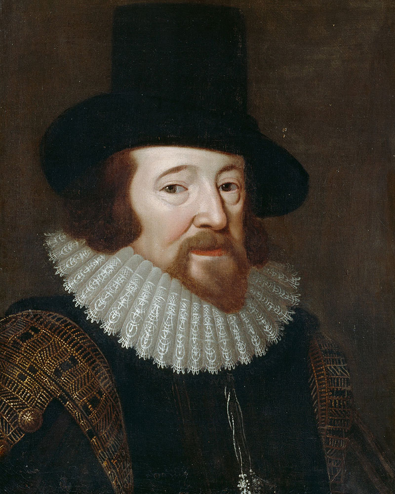

Frases sobre a importância da leitura ditas por grandes pensadores
Mariano José Pereira da Fonseca, primeiro e único visconde com grandeza e marquês de Maricá (Rio de Janeiro, 18 de maio de 1773 – Rio de Janeiro, 16 de setembro de 1848), foi um escritor, filósofo e político brasileiro.

"A paixão da leitura é a mais inocente, aprazível e a menos dispendiosa."
(Marquês de Maricá)
Albert Einstein (1879 – 1955), físico alemão de origem judaica, foi um dos maiores cientistas de todos os tempos.

"A leitura após certa idade distrai excessivamente o espírito humano das suas reflexões criadoras.
Todo o homem que lê demais e usa o cérebro de menos adquire a preguiça de pensar."
(Albert Einstei)
Francis Bacon, 1°. Visconde de Alban, também referido como Bacon de Verulâmio (Londres, 22 de janeiro de 1561 — Londres, 9 de abril de 1626) foi um político, filósofo empirista, cientista, ensaísta inglês, barão de Verulam e visconde de Saint Alban.
É considerado como um dos fundadores da Revolução Científica.

"A leitura traz ao homem plenitude; o discurso, segurança; e a escrita, precisão."
(Francis Bacon)
Ruth Machado Lousada Rocha (São Paulo, 2 de março de 1931) é uma escritora brasileira de livros infantis.
Autora do Best-Seller “Marcelo, Marmelo, Martelo”.

"O processo de leitura possibilita essa operação maravilhosa que é o encontro do que está dentro do livro com o que está guardado na nossa cabeça."
(Ruth Rocha)